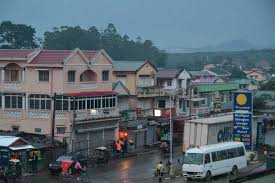
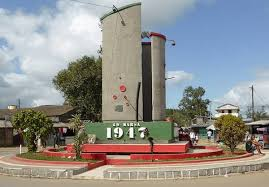
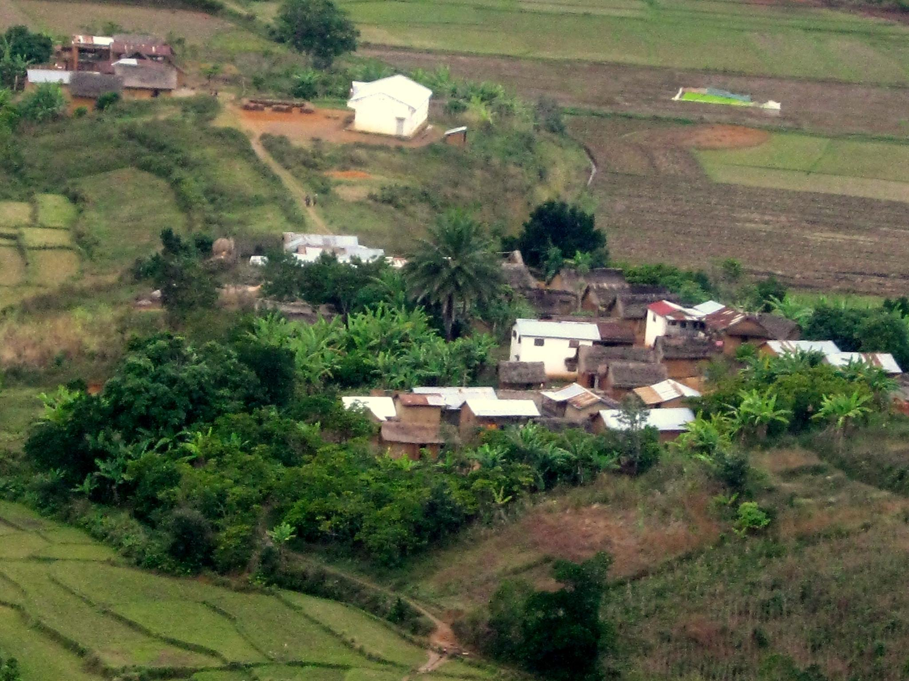

Generally, I would say that I come from Moramanga which is a city (commune urbaine) in Madagascar. It is located between the capital city Antananarivo and the east coast. The name Mora-manga literally means “cheap mangoes”, but it has nothing to do with mangoes. The city of Moramanga has an important place in the history of Madagascar. It was in Moramanga, on the night of the 29th of March 1947 that the Malagasy Uprising against French colonial rule started. Moramanga is also the capital city of the Bezanozano people (one of the eighteen Ethnic groups of Madagascar). Moramanga is in the Alaotra-Mangoro region.

The place where we celebrate the date of 29th of March.

More important, the village where I come from is called Ambodivero. It is a small village in Vodiriana.Vodiriana is a town and commune in Madagascar. It belongs to the district of Moramanga, which is a part of Alaotra-Mangoro Region. The population of the commune was estimated to be approximately 25000. Primary and junior level secondary education are available in town. The majority 99.5% of the population of the commune are farmers. The most important crops are rice and cassava, while other important agricultural products are pineapple and beans. Services provide employment for 0.5% of the population.
This is my village where I grew up. 
Everyone has their own way to pay for living, but most people are farming. As we are still near by the forest,going to the forest everyday is our dayly job. In the evening, it is my plesure to see most of the residents gathering in the village in order to entertain themselves in different ways.